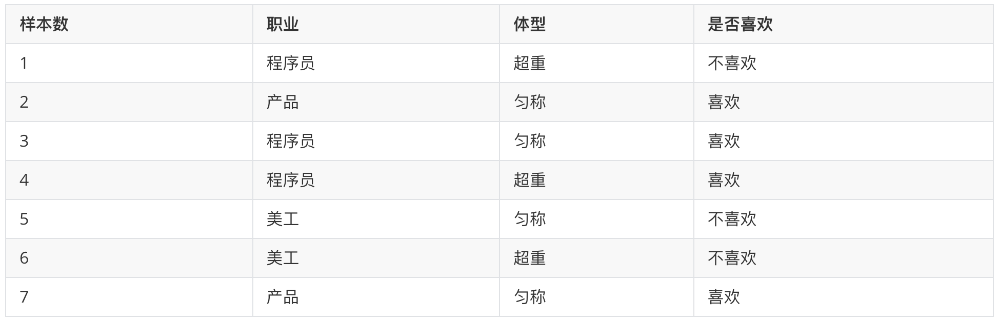
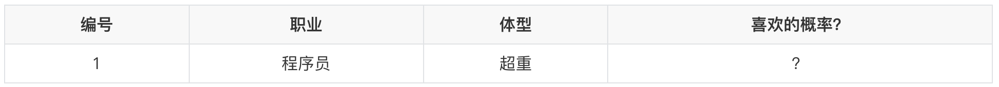
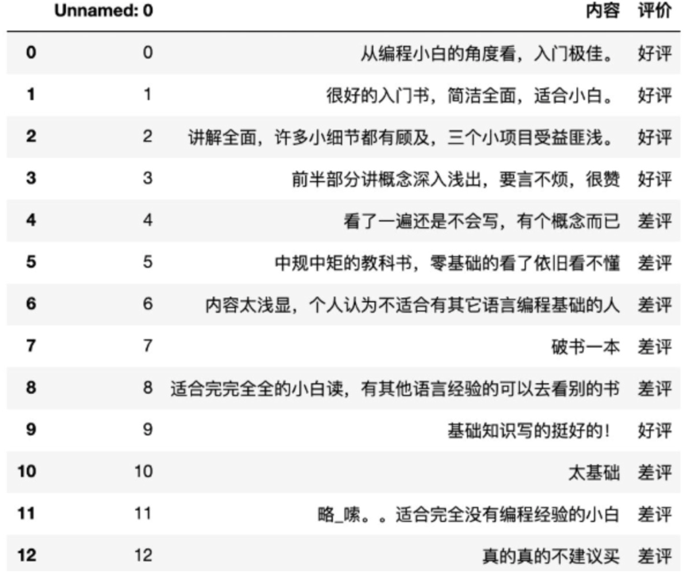

朴素贝叶斯介绍
- 复习常见概率的计算
- 知道贝叶斯公式
- 了解朴素贝叶斯是什么
- 了解拉普拉斯平滑系数的作用
【知道】常见的概率公式

条件概率： 表示事件A在另外一个事件B已经发生条件下的发生概率，P(A|B)
在女神喜欢的条件下，职业是程序员的概率？
- 女神喜欢条件下，有 2、3、4、7 共 4 个样本
- 4 个样本中，有程序员 3、4 共 2 个样本
- 则 P(程序员|喜欢) = 2/4 = 0.5
联合概率： 表示多个条件同时成立的概率，P(AB) = P(A) P(B|A)
特征条件独立性假设：P(AB) = P(A) P(B)
职业是程序员并且体型匀称的概率？
- 数据集中，共有 7 个样本
- 职业是程序员有 1、3、4 共 3 个样本，则其概率为：3/7
- 在职业是程序员，体型是匀称有 3 共 1 个样本，则其概率为：1/3
- 则即是程序员又体型匀称的概率为：3/7 * 1/3 = 1/7
联合概率 + 条件概率：
在女神喜欢的条件下，职业是程序员、体重超重的概率？ P(AB|C) = P(A|C) P(B|AC)
- 在女神喜欢的条件下，有 2、3、4、7 共 4 个样本
- 在这 4 个样本中，职业是程序员有 3、4 共 2 个样本，则其概率为：2/4=0.5
- 在在 2 个样本中，体型超重的有 4 共 1 个样本，则其概率为：1/2 = 0.5
- 则 P(程序员, 超重|喜欢) = 0.5 * 0.5 = 0.25
简言之： 条件概率：在去掉部分样本的情况下，计算某些样本的出现的概率，表示为：P(B|A) 联合概率：多个事件同时发生的概率是多少，表示为：P(AB) = P(B)*P(A|B)
【理解】贝叶斯公式
- P(C) 表示 C 出现的概率
- P(W|C) 表示 C 条件 W 出现的概率
- P(W) 表示 W 出现的概率

- P(C|W) = P(喜欢|程序员，超重)
- P(W|C) = P(程序员，超重|喜欢)
- P(C) = P(喜欢)
- P(W) = P(程序员，超重)
- 根据训练样本估计先验概率P(C)：P(喜欢) = 4/7
- 根据条件概率P(W|C)调整先验概率：P(程序员,超重|喜欢) = 1/4
- 此时我们的后验概率P(C|W)为：P(程序员,超重|喜欢) * P(喜欢) = 4/7 * 1/4 = 1/7
- 那么该部分数据占所有既为程序员，又超重的人中的比例是多少呢？
- P(程序员,超重) = P(程序员) * P(超重|程序员) = 3/7 * 2/3 = 2/7
- P(喜欢|程序员, 超重) = 1/7 ➗ 2/7 = 0.5
【理解】朴素贝叶斯
我们发现，在前面的贝叶斯概率计算过程中，需要计算 P(程序员,超重|喜欢) 和 P(程序员, 超重) 等联合概率，为了简化联合概率的计算，朴素贝叶斯在贝叶斯基础上增加：特征条件独立假设，即：特征之间是互为独立的。
此时，联合概率的计算即可简化为：
- P(程序员,超重|喜欢) = P(程序员|喜欢) * P(超重|喜欢)
- P(程序员,超重) = P(程序员) * P(超重)
【知道】拉普拉斯平滑系数
由于训练样本的不足，导致概率计算时出现 0 的情况。为了解决这个问题，我们引入了拉普拉斯平滑系数。
- α 是拉普拉斯平滑系数，一般指定为 1
- Ni 是 F1 中符合条件 C 的样本数量
- N 是在条件 C 下所有样本的总数
- m 表示所有独立样本的总数
我们只需要知道为了避免概率值为 0，我们在分子和分母分别加上一个数值，这就是拉普拉斯平滑系数的作用。
【案例】情感分析
学习目标：
1.知道朴素贝叶斯的API
2.能够应用朴素贝叶斯实现商品评论情感分析
【知道】api介绍
- sklearn.naive_bayes.MultinomialNB(alpha = 1.0)
- 朴素贝叶斯分类
- alpha：拉普拉斯平滑系数
【实践】商品评论情感分析
已知商品评论数据，根据数据进行情感分类（好评、差评

步骤分析
- 1）获取数据
- 2）数据基本处理
- 2.1） 取出内容列，对数据进行分析
- 2.2） 判定评判标准
- 2.3） 选择停用词
- 2.4） 把内容处理，转化成标准格式
- 2.5） 统计词的个数
- 2.6）准备训练集和测试集
- 3）模型训练
- 4）模型评估
代码实现
Python
# 首次运行前安装：pip install jieba import jieba import numpy as np import pandas as pd from sklearn.feature_extraction.text import CountVectorizer from sklearn.metrics import accuracy_score, classification_report from sklearn.model_selection import train_test_split from sklearn.naive_bayes import MultinomialNB
- 1）获取数据
Python
df = pd.read_csv("data/书籍评价.csv", encoding="gbk") df = df[["内容", "评价"]].dropna() df["label"] = np.where(df["评价"].eq("好评"), 1, 0) print(df.head()) print("标签分布：\n", df["评价"].value_counts())
- 2）数据基本处理
Python
with open("data/stopwords.txt", encoding="utf-8") as f: stopwords = {line.strip() for line in f if line.strip()} texts = df["内容"].map(lambda text: " ".join(jieba.lcut(text))) X_train_text, X_test_text, y_train, y_test = train_test_split( texts, df["label"], test_size=0.3, stratify=df["label"], random_state=42 ) # 只在训练集上学习词表，避免把测试集信息泄漏给模型 vectorizer = CountVectorizer(stop_words=list(stopwords)) X_train = vectorizer.fit_transform(X_train_text) X_test = vectorizer.transform(X_test_text) print("词频矩阵形状：", X_train.shape)
- 3）模型训练
Python
model = MultinomialNB(alpha=1.0) # alpha=1 即拉普拉斯平滑 model.fit(X_train, y_train) y_pred = model.predict(X_test)
- 4）模型评估
Python
print("准确率：", accuracy_score(y_test, y_pred)) print(classification_report( y_test, y_pred, target_names=["差评", "好评"], zero_division=0 )) new_comment = "内容清楚，适合初学者" new_words = " ".join(jieba.lcut(new_comment)) new_vector = vectorizer.transform([new_words]) label = model.predict(new_vector)[0] print("新评论预测：", "好评" if label == 1 else "差评")
作业
1.使用思维导图整理朴素贝叶斯的内容
2.动手实现商品评论情感分析案例